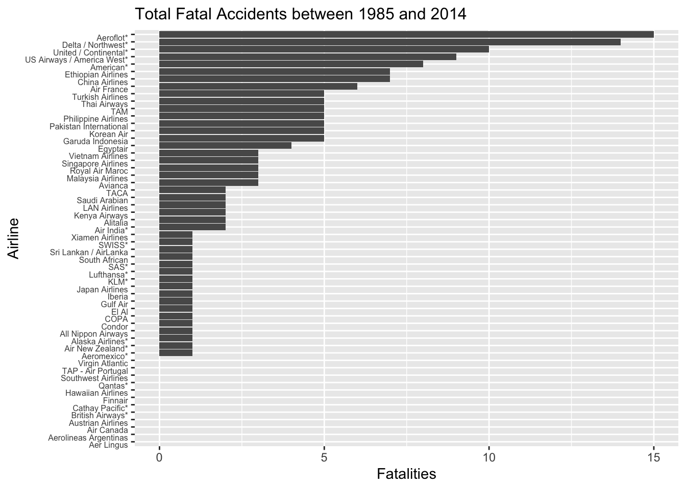

1 Background and Significance
When considering the most monumental disasters in human history, the terrorist attacks on September 11, 2001 (referred to as 9/11) often come to mind. Of the many takeaways society gathered from the horrific event, the most prominent may well have been the necessity to increase airline security to improve safety for those on board aircraft. While the implementation of the Transportation Security Administration (TSA) may invade one's privacy, it has indeed improved overall safety by decreasing the number of terrorist attacks on aircraft (Hunter). However, have aircraft themselves actually become safer?
The short answer to the question presented above is yes, largely due to the continuous technological advancements that influence aircrafts. In the past (namely throughout the twentieth century), the advancements in the aerospace industry have been nearly exclusively through better, typically lighter materials. However, new products used are not purely performance driven because there is this new idea of customer value, where companies decrease costs to maximize profit (Starke). This begs the question: are airlines cutting costs to increase profits to the extent where safety is being hindered? In other words, are aircrafts as safe as possible given the current level of technology? This is harder to answer than the former question presented, and is a driving force for our study.
The goal of our study is to improve the understanding of how safe aircrafts truly are, and if they have become more safe following the 9/11 attacks. We determine if, following 9/11, instances where aircrafts experienced incidents resulted in fewer fatalities on average than in the past. We define a flight incident as a scenario where an aircraft experiences a malfunction, which can range from a radio malfunction to a burst engine or a hijacking. Understanding the extent to which the safety of traveling via aircraft has truly improved will enable us to realize whether or not the aerospace field is lagging in terms of overall safety. Moreover, we are interested in whether there is a significant difference in the safety of flights for US based airlines versus non-US based airlines. We hypothesize that flights have increased in overall safety, where flights post 9/11 have a statistically significantly lower average rate of fatalities per incident than those prior to 9/11. Additionally, we hypothesize that American-based airlines are safer than non-American based airlines.
2 Methods
2.1 Data Collection
The data for this project was collected from the Five Thirty Eight database on Github. The data, sourced from the Aviation Safety Network, accumulates data on flight incidents for all major commercial airlines, over a 30 year period. The 30 year period splits the data in half (1985-1999 and 2000-2014). The variables that the data collects are the number of available seat kilometers available every week, the number of incidents, the number of fatal incidents and the number of fatalities for each 15 year period. Each observation represents a major airline. The airlines marked by an asterisk mean that the observations include regional subsidiaries of the airline.
2.2 Variable Creation
The data comes with eight original variables detailed in table 1 below. We created a Boolean variable to indicate whether an airline is American or not, as this variable helps us with our analysis. We also merged some variables into new ones in order to run some tests on them, such as total fatalities by airline which aggregates the total number of fatalities by airline from 1985 till 2014.
| Variable | Description |
|---|---|
airline |
Airline (asterisk indicates that regional subsidiaries are included) |
avail_seat_km_per_week |
Available seat kilometers flown every week |
incidents_85_99 |
Total number of incidents, 1985–1999 |
fatal_accidents_85_99 |
Total number of fatal accidents, 1985–1999 |
fatalities_85_99 |
Total number of fatalities, 1985–1999 |
incidents_00_14 |
Total number of incidents, 2000–2014 |
fatal_accidents_00_14 |
Total number of fatal accidents, 2000–2014 |
fatalities_00_14 |
Total number of fatalities, 2000–2014 |
americanairline |
Boolean variable. 1 indicates an American airline. |
2.3 Methodology
To determine if flights following 9/11 became safer, we first conduct two ordinary least squares (OLS) simple linear regressions. In the first regression, we regress the number of fatal accidents on the number of flight incidents for the data before the year 2000. The next regression is very similar to the first other than restricting the data for after the year 2000, where we again regress the number of fatal accidents on the number of incidents. We then compare our coefficients from the two regressions to see if flights following 2000 did truly become less deadly following the 9/11 attacks. It is important to note, as is discussed in a later section regarding limitations, that we are using the year 2000 instead of 2001 as the intervention year due to how our data is structured. Following our two initial OLS regressions, we run a permutation test to compare the overall safety of American based versus non-American based airlines. We compare the mean fatal accidents per airline on American and non-American airlines and determine if our results are statistically significant. Finally, we run a third OLS simple linear regression to show the effect of total incidents on total fatal accidents for American airlines. We do this by adding an interaction term - where we interact the variable for American airlines with the total number of incidents. This provides further analysis to compare the safety of American based airlines and non-American based airlines.
3 Results
| Variable | Mean | Sd | Min | Max |
|---|---|---|---|---|
| Number of Incidents (1985-1999) | 7.18 | 11.04 | 0 | 76 |
| Fatal Accidents (1985-1999) | 2.18 | 2.86 | 0 | 14 |
| Fatalities (1985-1999) | 112.41 | 146.69 | 0 | 535 |
| Number of Incidents (2000-2014) | 4.12 | 4.54 | 0 | 24 |
| Fatal Accidents (2000-2014) | 0.66 | 0.86 | 0 | 3 |
| Fatalities (2000-2014) | 55.52 | 111.33 | 0 | 537 |
| American Airliners | 0.12 | 0.33 | 0 | 1 |
| N = 56 | Source: FiveThirtyEight |
3.1 Hypothesis Testing
Our analysis includes three tests for different hypotheses that we include in our data. The tests, detailed below, help us understand patterns in terms of incidents and fatalities for all airlines, specifically American airlines, before and after the year 2000. In our tests, we use an alpha of 0.00625 for our significance level. We divide our initial alpha, 0.05, by 8 (0.00625) our number of hypothesis tests) to obtain the new significance level (in order to prevent p-hacking in our study.
- Two regressions where we regress the number number of fatal accidents on the number of flight incidents before 2000 (first regression) and after 2000 (second regression). We will then compare the coefficients between the two to determine whether flight incidents became more deadly post 2000 or not.
- A permutation test to see whether the mean of fatal accidents between American and non-American airlines is statistically the same or not.
- A regression showing the effect of total fatal accidents on the total number of incidents for American airlines.
3.1.1 Have Flight Incidents Become Deadlier Post 2000?
We are interested in looking at whether flight incidents weer more deadly in the 15 years period before or after 2000. In order to do that, we will be running two regressions with the number of incidents as the explanatory variable and the number of fatal accidents as the response variable.
3.1.1.1 Pre 2000
# A tibble: 2 × 5
term estimate std.error statistic p.value
<chr> <dbl> <dbl> <dbl> <dbl>
1 (Intercept) 0.584 0.238 2.45 1.74e- 2
2 incidents_85_99 0.222 0.0182 12.2 3.55e-17As we can see in the results above, being in an incident in the (1985-1999) range is associated with a 0.222 increase in fatal accidents (for every 1000 incidents, 222 of them will be fatal). The 0.222 coefficient is statistically significant.
3.1.1.2 Post 2000
# A tibble: 2 × 5
term estimate std.error statistic p.value
<chr> <dbl> <dbl> <dbl> <dbl>
1 (Intercept) 0.195 0.126 1.55 0.128
2 incidents_00_14 0.113 0.0206 5.48 0.00000113The results in this section show that being in an incident in the range (2000-2014) is associated with an increase of 0.113 fatal accidents, with the coefficient being statistically significant (for every 1000 incidents, 113 of them will be fatal).
We can conclude that incidents have become less fatal after 2000 by a factor of 0.109 fatal accidents/incident.
3.1.2 Difference in Fatal Accidents between American and Non-American Airlines
# A tibble: 1 × 1
p_value
<dbl>
1 0.014This test is a permutation test that looks for a significance in the difference in means between American and non-American airlines. What this means is that we are assuming that American and non-American airlines have the same average fatal accidents per airline. We then test this hypothesis using the data that we have through a permutation test.
Looking at the graph above, and knowing that the p-value is 0.014, we know that we do not have statistical significance. Thus, we can not reject the null hypothesis that the mean of fatal accidents for American and non-American airlines are the same.
3.1.3 How Much is The Difference of Fatal Accidents between American and Non-American Airlines?
In order to calculate this difference, we will be running a regression with the Total Number of Fatal Accidents as the response variable, the Total Number of Incidents as the key explanatory variable and an interaction term between the Total Number of Incidents and the American Airline variable. The coefficient on the interaction term should tell us the percentage points difference in fatal accident between American and non-American airlines.
# A tibble: 4 × 5
term estimate std.error statistic p.value
<chr> <dbl> <dbl> <dbl> <dbl>
1 (Intercept) 0.549 0.265 2.07 4.33e- 2
2 total_incidents 0.193 0.0173 11.1 2.33e-15
3 americanairline1 -1.92 1.01 -1.89 6.37e- 2
4 total_incidents:americanairline1 0.118 0.0383 3.08 3.30e- 3Based on the results from our test above, an American airline who had an incident is associated with a 0.118 fatal accidents increase compared to a non-American airline. Moreover, this coefficient is statistically significant.
4 Discussion/Conclusions
When we started looking at the data, we expected that we should see an improvement in airline safety post 2000. This was true indeed, as our first test showed that following the year 2000, airline incidents have indeed become less fatal. Moreover, we expected to see a discrepancy in rates of fatal accidents between American and non-American airlines which we did not see. However, we were surprised when we found that on average, American incidents have been historically more fatal than non-American incidents. This might be due to some artifacts in our data. This is because the fatalities from 9/11 are included in the data in a way that’s almost impossible to isolate, which means that with the data we have, we cannot tell whether US airlines these days are less (or more) fatal than other airlines.
Thus, in conclusion, we can conclude that flying has become less fatal following the turn of the century in general, with American airlines seeming to be lacking behind their non-American counterparts.
4.1 Limitations
There are two main issues relating to the limitations of our study. The first, as often is the case, is the small sample size (only 56 observations) of our data. Additionally, our data is structured in such a way that we cannot use the date September 11, 2001 as our intervention date to compare the safety of flights for before and after 9/11. The data is grouped into dates before 2000 and after 2000, so we use the turn of the 21st century as our intervention date instead of the actual date for 9/11. Thus, when we compare flights from "before and after 9/11", we really are comparing flights from before and after the year 2000.
5 References
[1] R Core Team (2021). R: A language and environment for statistical computing. R Foundation for Statistical Computing, Vienna, Austria. URL https://www.R-project.org/.
[2] H. Wickham. ggplot2: Elegant Graphics for Data Analysis. Springer-Verlag New York, 2016.
[3] Wickham et al., (2019). Welcome to the tidyverse. Journal of Open Source Software, 4(43), 1686, https://doi.org/10.21105/joss.01686
[4] RStudio Team (2022). RStudio: Integrated Development Environment for R. RStudio, PBC, Boston, MA URL http://www.rstudio.com/.
[5] http://fivethirtyeight.com/features/should-travelers-avoid-flying-airlines-that-have-had-crashes-in-the-past/
[6] Hunter, J.A., Lambert, J.R. “Do we feel safer today? The impact of smiling customer service on airline safety perception post 9–11.” J Transp Secur 9, 35–56 (2016).
[7] Starke, Edgar A, Williams, James C. “Progress in Structural Materials for Aerospace Systems.” Acta Materialia, Pergamon, 14 Oct. 2003.
[8] Quarto
[9] USCLAP template
[10] Nick Huntington-Klein (2022). vtable: Variable Table for Variable Documentation. R package version 1.3.4. https://CRAN.R-project.org/package=vtable
6 Appendix

6.0.1 Code used
#Setting up the data
library(tidyverse)
library(tidymodels)
library(vtable)
remote <- 'https://raw.githubusercontent.com/'
account <- 'fivethirtyeight/'
folder <- 'data/master/airline-safety/'
file <- 'airline-safety.csv'
url <- str_c(remote, account, folder, file)
flights <- read_csv(url)
flights
#data wrangling and sumstats
american <- c("Alaska Airlines*",
"American*",
"Delta / Northwest*",
"Hawaiian Airlines",
"Southwest Airlines",
"United / Continental*",
"US Airways / America West*")
df <-
flights %>%
mutate(americanairline = ifelse(airline %in% american, 1, 0)) %>%
select(-avail_seat_km_per_week)
labs <- c("Number of Incidents (1985-1999)",
"Fatal Accidents (1985-1999)",
"Fatalities (1985-1999)",
"Number of Incidents (2000-2014)",
"Fatal Accidents (2000-2014)",
"Fatalities (2000-2014)" ,
"American Airliners")
vtable::sumtable(df, digits = 2 ,
title = "Summary Statistics",
note = "N = 56 | Source: FiveThirtyEight",
labels = labs,
summ = c("mean(x)", "sd(x)", "min(x)", "max(x)"),
fit.page = 30)
df <-
df %>%
mutate(total_fatal_accidents = fatal_accidents_00_14 + fatal_accidents_85_99) %>%
mutate(total_incidents = incidents_85_99 + incidents_00_14)
#hypothesis testing
model1 <-
linear_reg() %>%
set_engine('lm') %>%
set_mode('regression') %>%
fit(fatal_accidents_85_99 ~ incidents_85_99, data = df)
tidy(model1)
model2 <-
linear_reg() %>%
set_engine('lm') %>%
set_mode('regression') %>%
fit(fatal_accidents_00_14 ~ incidents_00_14, data = df)
tidy(model2)
#plot with model 1 and 2
df %>%
ggplot(aes(x = total_incidents, y =total_fatal_accidents)) +
geom_point() +
geom_abline(slope = 0.222, intercept = 0.584, color = 'red') +
geom_abline(slope = 0.113, intercept = 0.195, color = 'blue') +
xlab("Incidents") +
ylab("Fatal Accidents") +
ggtitle("Relationship between total flight incidents and total fatal accidents") +
theme(plot.title = element_text(size=11)) +
labs(caption = "Red Line: Pre 2000 | Blue Line: Post 2000")
#permutation test
set.seed(1776)
df$americanairline <-
as.character(df$americanairline)
obs_stat <-
df %>%
specify(total_fatal_accidents ~ americanairline) %>%
calculate(stat = 'diff in means',
order = c('1', '0'))
perm_dist <-
df %>%
specify(total_fatal_accidents ~ americanairline) %>%
hypothesize(null = 'independence') %>%
generate(reps = 1000, type = 'permute') %>%
calculate(stat = 'diff in means',
order = c('1', '0'))
perm_dist %>%
get_p_value(obs_stat = obs_stat, direction = 'right')
perm_dist %>%
visualize() +
shade_p_value(obs_stat = obs_stat, direction = 'right')
#more hypothesis testing
model3 <-
linear_reg() %>%
set_engine('lm') %>%
set_mode('regression') %>%
fit(total_fatal_accidents ~ total_incidents * americanairline, data = df)
tidy(model3)
#appendix graph
df2 <- df %>%
count(total_fatal_accidents, airline, sort = TRUE) %>%
mutate(airlines = reorder(airline, total_fatal_accidents))
df2 %>%
ggplot(aes(x = total_fatal_accidents, y = airlines)) +
geom_col() +
ylab("Airline") +
xlab("Fatalities") +
ggtitle("Total Fatal Accidents between 1985 and 2014") +
theme(axis.text.y = element_text(angle = 0, vjust = 1, hjust= 1, size = 6)) +
theme(plot.title = element_text(size=12))